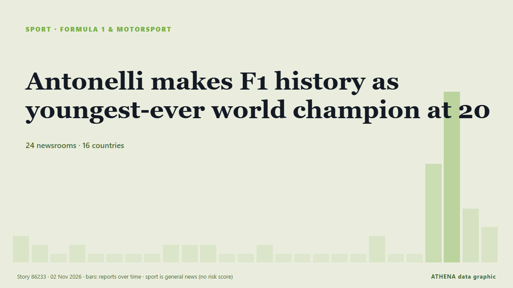

Formula 1 & motorsport
| 20 Oct | 0 |
|---|---|
| 21 Oct | 0 |
| 22 Oct | 0 |
| 23 Oct | 0 |
| 24 Oct | 0 |
| 25 Oct | 1 |
| 26 Oct | 0 |
| 27 Oct | 0 |
| 28 Oct | 1 |
| 29 Oct | 3 |
| 30 Oct | 3 |
| 31 Oct | 4 |
| 1 Nov | 2 |
| 2 Nov | 1 |

Antonelli makes F1 history as youngest-ever world champion at 20
MEXICO CITY: Kimi Antonelli drove the perfect race to finish third in his Mercedes at the Mexico Grand Prix and seal his place in Formula One history as the youngest world champion. from New Straits Times
Yamaha pulls out of Qatar MotoGP over ‘situation in the Middle East’
MotoGP says Yamaha's lack of participation at next weekend's event in Lusail 'carries sporting implications'. from Al Jazeera English
Marc Marquez wins Malaysian MotoGP, extends championship lead
Ducati rider claims 7th victory of season to move 44 points clear of Jorge Martin ahead of Qatar Grand Prix. from Anadolu Agency (English)
F1 2026 qualifying head-to-head: Mexico GP
After every Formula 1 qualifying session, Motorsport.com publishes each team's qualifying record in terms of team-mate battles. from Motorsport.com
Lawson disqualified from Mexico City GP qualifying, to start last
Stewards slapped both drivers with grid penalties after practice contact left debris scattered across the Mexico City track. from Stuff
Haas drops Esteban Ocon for F1 Mexico GP
The Haas Formula 1 team has made the shock decision to replace Esteban Ocon with reserve driver Ryo Hirakawa for the remainder of the Mexico Grand Prix weekend. from Motorsport.com
Isack Hadjar formally warned for fan incident in F1 Mexico GP paddock
Isack Hadjar has been given a formal warning by the Mexico Grand Prix stewards for shoving a fan in the Formula 1 paddock ahead of opening practice. from Motorsport.com
Lewis Hamilton: First Ferrari F1 pole “takes me back to watching Michael”
Lewis Hamilton can finally say he has scored pole position for three different teams after a blistering lap today gave him pole for tomorrow's Mexico City Grand Prix - his first grand prix pole for… from Motorsport.com
Leclerc dominates Mexico City GP first practice
Ferrari's Charles Leclerc was fastest from champion-elect Kimi Antonelli in first practice at the Mexico City Grand Prix. from Sky Sports
Verstappen leaves door open to Le Mans drive with Ricciardo
MAX VERSTAPPEN said a future Le Mans entry with former Red Bull teammate Daniel Ricciardo could appeal, but only if it came with the preparation needed to properly challenge for victory. from New Straits Times